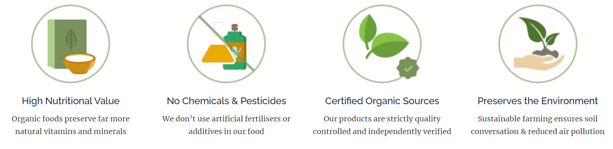

.Organic - Jordan's Leading Brand for Organic Food

.Organic has grown on the principles of health, ecology, and care. We believe in working with a large number of accredited farmers who do not use or promote the use of pesticides and genetically modified seeds to grow their produce. We aim to give our customers a healthy chemical-free meal for the perfect nutrition.
Why .Organic?
